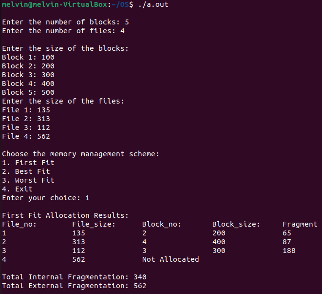
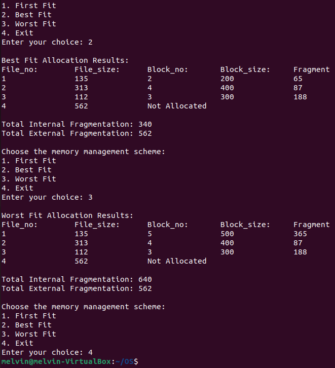

First Fit
Description: The First Fit algorithm allocates the first available memory block that is large enough to satisfy the request.
Process:
- Traverse the memory blocks from the beginning.
- Allocate the first block that is large enough to accommodate the process.
Advantages:
- Simple to implement and execute.
Disadvantages:
- Can lead to fragmentation as small gaps of unused memory may be left between allocated blocks.
Best Fit
Description: The Best Fit algorithm searches for the smallest available memory block that is large enough to satisfy the request.
Process:
- Traverse all memory blocks and find the smallest block that fits the process's needs.
- Allocate this block to the process.
Advantages:
- Minimizes wasted space by using the smallest available block.
Disadvantages:
- Can be slower than First Fit due to the need to search the entire memory.
- May also increase fragmentation by creating small unused gaps.
Worst Fit
Description: The Worst Fit algorithm allocates the largest available memory block that can satisfy the request.
Process:
- Traverse all memory blocks and find the largest block that fits the process's needs.
- Allocate this block to the process.
Advantages:
- Reduces the chances of creating small unused gaps in memory.
Disadvantages:
- Can lead to inefficient use of large memory blocks, as larger blocks might be split unnecessarily, leaving larger gaps that are less useful.
Memory Management Algorithm Code
#include <stdio.h>
#include <limits.h>
#define MAX 25
// Function declarations
void firstFit(int nb, int nf, int b[], int f[]);
void bestFit(int nb, int nf, int b[], int f[]);
void worstFit(int nb, int nf, int b[], int f[]);
int main() {
int b[MAX], f[MAX], nb, nf, choice;
// Input for number of blocks and files
printf("\nEnter the number of blocks: ");
scanf("%d", &nb);
printf("Enter the number of files: ");
scanf("%d", &nf);
// Input for the size of each block
printf("\nEnter the size of the blocks:\n");
for (int i = 0; i < nb; i++) {
printf("Block %d: ", i + 1);
scanf("%d", &b[i]);
}
// Input for the size of each file
printf("Enter the size of the files:\n");
for (int i = 0; i < nf; i++) {
printf("File %d: ", i + 1);
scanf("%d", &f[i]);
}
while(1){
// User choice for memory management scheme
printf("\nChoose the memory management scheme:\n");
printf("1. First Fit\n");
printf("2. Best Fit\n");
printf("3. Worst Fit\n");
printf("4. Exit\n");
printf("Enter your choice: ");
scanf("%d", &choice);
switch (choice) {
case 1:
firstFit(nb, nf, b, f);
break;
case 2:
bestFit(nb, nf, b, f);
break;
case 3:
worstFit(nb, nf, b, f);
break;
case 4:
return 0;
break;
default:
printf("\nInvalid choice! Please enter a valid option (1, 2, or 3).\n");
}
}
return 0;
}
// First Fit Allocation
void firstFit(int nb, int nf, int b[], int f[]) {
int frag[MAX], bf[MAX] = {0}, ff[MAX];
int totalInternalFrag = 0, totalExternalFrag = 0;
for (int i = 0; i < nf; i++) {
ff[i] = -1; // Initialize as unallocated
for (int j = 0; j < nb; j++) {
if (bf[j] == 0 && b[j] >= f[i]) { // If block is free and can fit the file
ff[i] = j;
frag[i] = b[j] - f[i];
bf[j] = 1; // Mark block as allocated
totalInternalFrag += frag[i];
break;
}
}
if (ff[i] == -1) {
totalExternalFrag += f[i]; // Add to external fragmentation if not allocated
}
}
// Output results
printf("\nFirst Fit Allocation Results:");
printf("\nFile_no:\tFile_size:\tBlock_no:\tBlock_size:\tFragment");
for (int i = 0; i < nf; i++) {
if (ff[i] != -1) {
printf("\n%d\t\t%d\t\t%d\t\t%d\t\t%d", i + 1, f[i], ff[i] + 1, b[ff[i]], frag[i]);
} else {
printf("\n%d\t\t%d\t\tNot Allocated", i + 1, f[i]);
}
}
printf("\n\nTotal Internal Fragmentation: %d", totalInternalFrag);
printf("\nTotal External Fragmentation: %d\n", totalExternalFrag);
}
// Best Fit Allocation
void bestFit(int nb, int nf, int b[], int f[]) {
int frag[MAX], bf[MAX] = {0}, ff[MAX];
int totalInternalFrag = 0, unallocatedFileSize = 0, lowest;
for (int i = 0; i < nf; i++) {
lowest = 10000; // Reset for each file
ff[i] = -1; // Initialize as unallocated
for (int j = 0; j < nb; j++) {
int temp = b[j] - f[i];
if (bf[j] == 0 && temp >= 0 && temp < lowest) { // Find the smallest suitable block
ff[i] = j;
lowest = temp;
}
}
if (ff[i] != -1) {
frag[i] = lowest;
bf[ff[i]] = 1; // Mark block as allocated
totalInternalFrag += frag[i];
} else {
unallocatedFileSize += f[i]; // Add unallocated file size to external fragmentation
}
}
// Output results
printf("\nBest Fit Allocation Results:");
printf("\nFile_no:\tFile_size:\tBlock_no:\tBlock_size:\tFragment");
for (int i = 0; i < nf; i++) {
if (ff[i] != -1) {
printf("\n%d\t\t%d\t\t%d\t\t%d\t\t%d", i + 1, f[i], ff[i] + 1, b[ff[i]], frag[i]);
} else {
printf("\n%d\t\t%d\t\tNot Allocated", i + 1, f[i]);
}
}
printf("\n\nTotal Internal Fragmentation: %d", totalInternalFrag);
printf("\nTotal External Fragmentation: %d\n", unallocatedFileSize);
}
// Worst Fit Allocation
void worstFit(int nb, int nf, int b[], int f[]) {
int frag[MAX], bf[MAX] = {0}, ff[MAX];
int totalInternalFrag = 0, unallocatedFileSize = 0, highest;
for (int i = 0; i < nf; i++) {
highest = -1; // Reset for each file
ff[i] = -1; // Initialize as unallocated
for (int j = 0; j < nb; j++) {
int temp = b[j] - f[i];
if (bf[j] == 0 && temp >= 0 && temp > highest) { // Find the largest suitable block
ff[i] = j;
highest = temp;
}
}
if (ff[i] != -1) {
frag[i] = highest;
bf[ff[i]] = 1; // Mark block as allocated
totalInternalFrag += frag[i];
} else {
unallocatedFileSize += f[i]; // Add unallocated file size to external fragmentation
}
}
// Output results
printf("\nWorst Fit Allocation Results:");
printf("\nFile_no:\tFile_size:\tBlock_no:\tBlock_size:\tFragment");
for (int i = 0; i < nf; i++) {
if (ff[i] != -1) {
printf("\n%d\t\t%d\t\t%d\t\t%d\t\t%d", i + 1, f[i], ff[i] + 1, b[ff[i]], frag[i]);
} else {
printf("\n%d\t\t%d\t\tNot Allocated", i + 1, f[i]);
}
}
printf("\n\nTotal Internal Fragmentation: %d", totalInternalFrag);
printf("\nTotal External Fragmentation: %d\n", unallocatedFileSize);
}
Sample Input
Enter the number of blocks: 5
Enter the number of files: 4
Enter the size of the blocks:
Block1: 100
Block2: 200
Block3: 300
Block4: 400
Block5: 500
Enter the size of the files:
File1: 135
File2: 313
File3: 112
File4: 562
Sample Output

